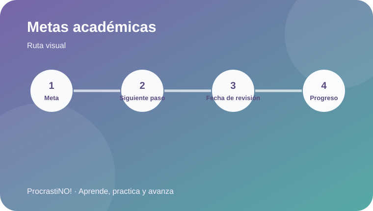

Módulo 5 · 5
Metas académicas a largo plazo
Convierte una meta amplia en un próximo paso concreto y una fecha de revisión.


De la meta al siguiente paso
Una meta académica se vuelve accionable cuando tiene un siguiente paso pequeño y una fecha para revisar el avance. La revisión permite ajustar el plan sin abandonar el objetivo.
Idea clave:
Usa el constructor de abajo: escribe la meta, define el siguiente paso y fija una fecha de revisión.
Referencias
- American Psychological Association. (2024). Better learning. https://www.apa.org/education-career/training/psyclearn-student-better-learning